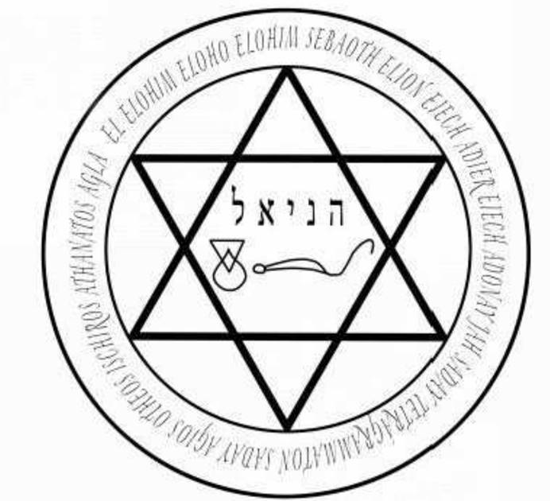

The simplicity of what follows should not be underestimated. If you sense that somebody is attracted to you, this ritual can turn the desire into love.
以下内容的简单性不应被低估。如果你感觉到某人被你吸引，这个仪式可以将欲望转化为爱。
This works whether or not you have begun a relationship already. You can use the ritual when the person in question is a friend, a casual lover or a more serious partner. It will not work on complete strangers, and it will not work if there is no attraction. If there is no attraction, use other parts of the book to get to that stage.
无论你是否已经开始一段关系，这个仪式都有效。当对方是朋友、临时情人或更认真的伴侣时，你都可以使用这个仪式。它对完全陌生的人无效，如果没有吸引力也无效。如果没有吸引力，请使用本书的其他部分来达到那个阶段。
The ritual is powerful. Be warned that the results can be so powerful that they are life changing. I am with my life partner as a result of this ritual.
这个仪式非常强大。请注意，结果可能如此强大以至于改变生活。我现在的伴侣就是这个仪式的结果。
Be careful what you wish for. If you are wise, you will only use a love spell when you are sure that falling in love will work for both of you. This spell will work on you as well, making you fall more deeply in love than you already are.
小心你许下的愿望。如果你明智，只有当你确定坠入爱河对你们双方都有益时，你才会使用爱情咒语。这个咒语也会对你起作用，让你比现在更深地坠入爱河。
At one point in the ritual you will call on the angel Haniel. For that, print out or copy the following sigil, and have it nearby. Again, it can be found on the website if required. http://galleryofmagick.com/images/
在仪式中的某个时刻，你将召唤天使哈尼尔（Haniel）。为此，打印或复制以下印记，并将其放在附近。如果需要，也可以在网站上找到它。http://galleryofmagick.com/images/

Gemini注释：(注：围绕六芒星的文字为神名，中心为希伯来文“哈尼尔”。顺序可能因传统而略有不同，此处按图片文字排列。)
The ritual makes use of powerful spirits that are bound by the powers of the angel Arzel. Popularized in the book known as The Miracle of New Avatar Power, by Goef Gray-Cobb, Arzel is the key to this ritual. Gray-Cobb's book, although an excellent starting point for this kind of magick, did not give enough detail on Arzel for me to get the best results. In his book you simply call on Arzel (he even gets the pronunciation wrong) and petition for help. There is a better way.
该仪式利用受天使阿尔泽（Arzel）力量约束的强大灵体。阿尔泽在戈夫·格雷-科布（Goef Gray-Cobb）所著的《新阿凡达力量的奇迹》（The Miracle of New Avatar Power）一书中得到普及，是这个仪式的关键。格雷-科布的书虽然是这类魔法的一个极好的起点，但没有提供足够的关于阿尔泽的细节让我获得最佳效果。在他的书中，你只需召唤阿尔泽（他甚至连发音都弄错了）并请求帮助。有更好的方法。
In all occult work, sensing a spirit's presence can be quite difficult, especially if you are new to magick. The wonderful thing about Arzel is that if called in this way, you will sense a glorious, strong and powerful presence who will bind the other spirits to do your bidding.
在所有神秘学工作中，感知灵体的存在可能相当困难，尤其是如果你是魔法新手。关于阿尔泽的奇妙之处在于，如果以这种方式召唤，你会感觉到一个光荣、强大且有力的存在，它会约束其他灵体来执行你的命令。
First, a word on the pronunciation of Arzel. The best pronunciation is ARZ-ALE, where ALE rhymes with 'pale'. I often stress that pronunciation is no blockage to magick, but with Arzel the pronunciation is important. If you get it wrong, the magick will still work, but the connection with Arzel will be weaker and the results more haphazard.
首先，关于阿尔泽（Arzel）的发音。最好的发音是 ARZ-ALE，其中 ALE 的发音与 'pale' 相同。我经常强调发音不是魔法的障碍，但对于阿尔泽来说，发音很重要。如果发音错误，魔法仍然会起作用，但与阿尔泽的连接会减弱，结果会更加随意。
Make sure you have the sigil of Haniel nearby, and begin the ritual by evoking Arzel.
确保哈尼尔的印记在附近，并通过召唤阿尔泽开始仪式。
This is the best method for evoking Arzel as rapidly as possible.
这是尽可能快地召唤阿尔泽的最佳方法。
In a quiet space, sit or stand facing East, and repeat the phrase:
在一个安静的空间里，面向东方坐下或站立，然后重复这句话：
ANKAR YODE HAY VAW HAY
Say the words out loud. They are pronounced as written.
Ankar sounds like 'an car'.
Yode sounds like Yoda without an 'a' at the end.
Hay sounds like, 'Hay' or 'Hey'.
Vaw sounds like 'raw' but with a v.
中文译文
ANKAR YODE HAY VAW HAY
(安卡尔 尤德 黑 瓦乌 黑)
大声说出这些词。它们的发音如书面所示。
Ankar 听起来像 'an car' (安 卡)。
Yode 听起来像 Yoda (尤达) 但结尾没有 'a'。
Hay 听起来像 'Hay' (黑) 或 'Hey' (嘿)。
Vaw 听起来像 'raw' (若) 但带有 v 的音。
Repeat this phrase until you feel that you are beginning to relax, and that your mind is entering a trance-like state. You don't need to be out of your mind - just let yourself relax into a magickal state of mind as you say these words. When you feel ready to call on Arzel- it might take to seconds or a few minutes - say the following.
重复这句话，直到你感觉到自己开始放松，并且你的头脑正在进入一种类似恍惚的状态。你不需要失去意识——只需让自己在说这些话的时候放松进入一种魔法的心态。当你准备好召唤阿尔泽时——可能需要几秒钟或几分钟——说出以下的话。
Kosu harim silah va'anafeha arz-ale.
(KOH-SUE HAR-IM SIL-AH VA-ANNA-FEHA ARZ-ALE)
中文译文
Kosu harim silah va'anafeha arz-ale.
(KOH-SUE HAR-IM SIL-AH VA-ANNA-FEHA ARZ-ALE) (科苏 哈林 西拉 瓦安纳菲哈 阿尔泽勒)
Say this three times. You may feel Arzel's presence on the first call. You may sense a bright white light, or smell the scent of trees, or hear pleasant, calming noises. If you don't feel much, don't worry - Arzel is listening. Arzel comes when called and is working for you.
说三遍。你可能在第一次召唤时就感觉到阿尔泽的存在。你可能会感觉到一道明亮的白光，或者闻到树木的香味，或者听到愉快、平静的声音。如果你感觉不多，别担心——阿尔泽正在聆听。阿尔泽被召唤时就会到来，并且为你工作。
Now say, 'I call on thee, mighty Arzel (ARZ-ALE), to assist me with this work of magick.'
现在说，“我召唤你，强大的阿尔泽 (ARZ-ALE)，来协助我完成这项魔法工作。”
Say the following, replacing N. with the name of the one you love.
说出以下的话，用你所爱之人的名字替换N。
'In the Power of the Names EH-HEH-YEH, YEH-HO-VO-EL-OH-HEEM and YEH-HO-VO-EL-OH-AH-VAY-DAH-ASS I place this Invocation with Sisera (SEE-SAIR-AH), genius of desire and Jazer (and JAZZ-AIR), genius who compels love. Know that I require and command thee to bring me the love and passion of N. Send my love into his/her heart so that s/he returns my love. Be Thou ruled by me in the Names SHAH-DIE-ELL-KIGH and AH-DOH-NIGH-HA-AH-RETZ.'
“以 EH-HEH-YEH (埃赫耶), YEH-HO-VO-EL-OH-HEEM (耶和华-伊洛希姆) 和 YEH-HO-VO-EL-OH-AH-VAY-DAH-ASS (耶和华-伊洛亚-瓦-达特) 之名的力量，我将此祈请与西塞拉 (SEE-SAIR-AH)，欲望的精灵，以及雅泽 (JAZZ-AIR)，迫使爱情的精灵同在。要知道我要求并命令你带给我N的爱与激情。将我的爱送入他/她的心中，使他/她回报我的爱。愿你在 SHAH-DIE-ELL-KIGH (沙代-艾尔-柴) 和 AH-DOH-NIGH-HA-AH-RETZ (阿多奈-哈-阿雷茨) 之名下受我支配。”
Stare at the sigil of Haniel.
凝视哈尼尔的印记。
Say the word 'Eh'. This is the Greek vowel eta, which sounds like the middle of the word 'set'. It should take two or three seconds to say this word, starting at a high pitch and ending low. Saying this word ignites the sigil of Haniel, and switches it on, ready for use.
说出“Eh”这个词。这是希腊元音 eta (η)，听起来像单词“set”的中间部分。说这个词应该需要两到三秒钟，从高音开始，到低音结束。说这个词会点燃哈尼尔的印记，并将其启动，准备使用。
Chant the name Haniel for a minute or so. You may or may not sense the angel's presence. If you do, continue with the next part immediately. If you sense no presence, keep going for a minute and know that Haniel can hear you. Then say:
吟唱哈尼尔的名字大约一分钟。你可能会也可能不会感觉到天使的存在。如果你感觉到了，立即继续下一部分。如果你没有感觉到任何存在，继续吟唱一分钟，并知道哈尼尔能听到你。然后说：
'By the power of Arzel, I call on Haniel to warm the heart of N., so that s/she feels my love and returns it a thousandfold. I seal this command with the word ANNA-THAN-TOS. Thus time moves on.'
“以阿尔泽的力量，我召唤哈尼尔温暖N.的心，使他/她感受到我的爱并千百倍地回报。我以ANNA-THAN-TOS (安纳-坦-托斯) 这个词封印此命令。时间就这样流逝。”
Feel a brief Thank You, directed towards the angel Haniel, to the spirits Jazer and Sisera, and to Arzel who has overseen the operation. You do not need to plead and beg or act as though you are inferior. These spirits are powerful but they came because you called, and because it is their duty to serve those who call them. So thank them politely, and know that they are dismissed and leaving you now to do the work.
对天使哈尼尔、精灵雅泽和西塞拉，以及监督整个操作的阿尔泽，表示简短的感谢。你不需要恳求或表现得好像你低人一等。这些灵体是强大的，但它们是因为你召唤而来，并且因为服务那些召唤它们的人是它们的职责。所以礼貌地感谢它们，并知道它们现在已经被遣散，离开你去完成工作了。
The ritual is done. You can put the sigil of Haniel away, and forget about the results you seek by keeping yourself busy with something else. Note that the one you love may declare passion and love within minutes or may keep the feelings secret. The wisest workers perform this ritual every day for 11 days.
仪式完成了。你可以把哈尼尔的印记收起来，然后通过让自己忙于其他事情来忘记你所寻求的结果。请注意，你所爱的人可能会在几分钟内表白激情和爱意，也可能会把感情秘而不宣。最明智的执行者会连续11天每天进行这个仪式。